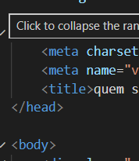
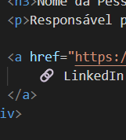
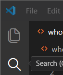

A AutiTech
A AutiTech é uma empresa focada em soluções tecnológicas inteligentes, atuando em diferentes frentes para otimizar processos e gerar valor real.
Nosso time é especializado em áreas como desenvolvimento web, suporte técnico, sistemas de gestão e automação de processos, sempre com foco em eficiência, inovação e resultados.
Conheça quem lidera nossa equipe

Glauber Santos
Engenharia de requisitos
Desenvolvimento Web
Direção de projetos, Divisão Brasil


Nossa Missão, Visão e Valores
Missão
Entregar soluções tecnológicas de alta qualidade que otimizem processos e gerem impacto real nos resultados dos nossos clientes.
Visão
Ser referência em automação e tecnologia, impulsionando inovação e crescimento sustentável no mercado.
Valores
Integridade, responsabilidade, inovação, sustentabilidade e compromisso com a excelência em tudo o que fazemos.